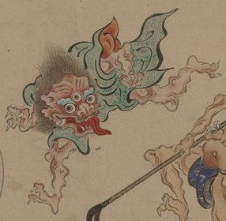

三つ目の化物。体が赤く、緑色の衣を身にまとっている。大きな舌を出し、鋭い牙を覗かせている。体毛が濃く、ひげを生やしており、髪は逆立っている。
出典：親書誌：U426_nichibunken_0154：妖怪絵巻；ヨウカイエマキ／日付：2010／資源識別子：U426_nichibunken_0154_0007_0000
Copyright (c)2010- International Research Center for Japanese Studies, Kyoto, Japan. All rights reserved.